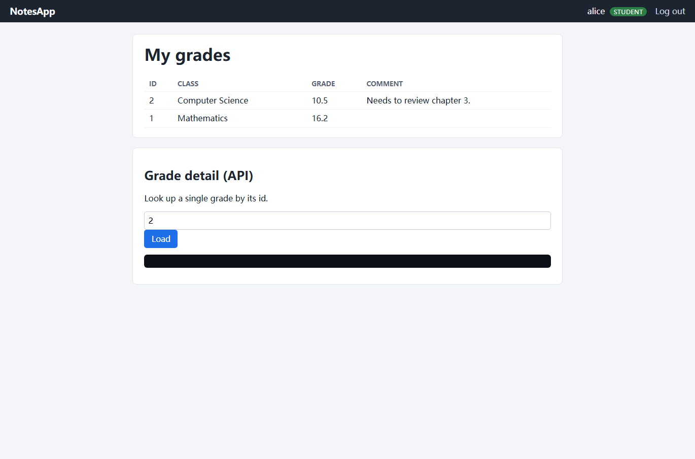
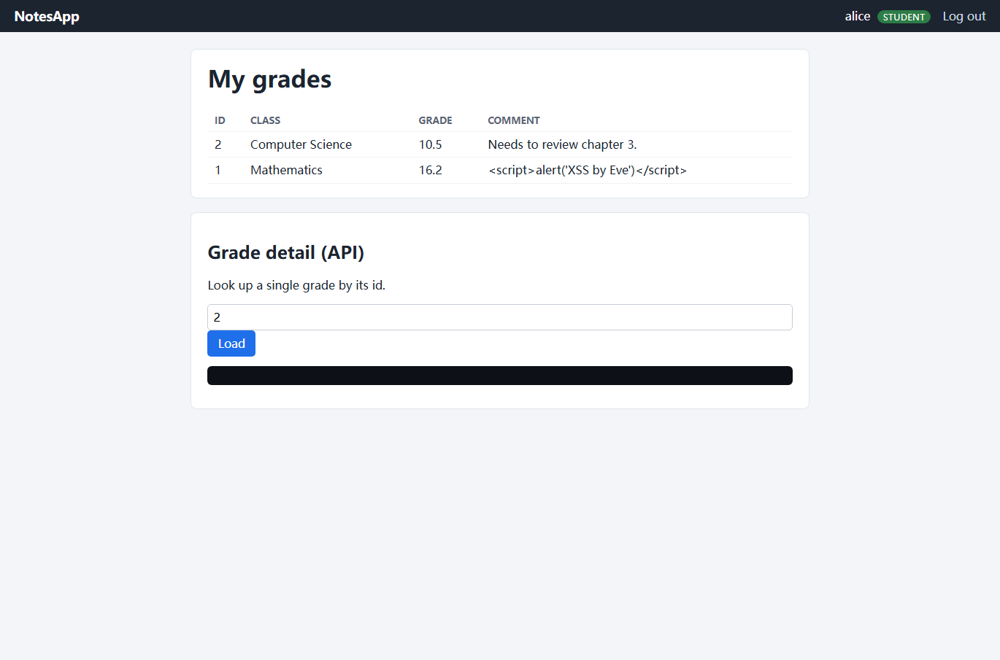
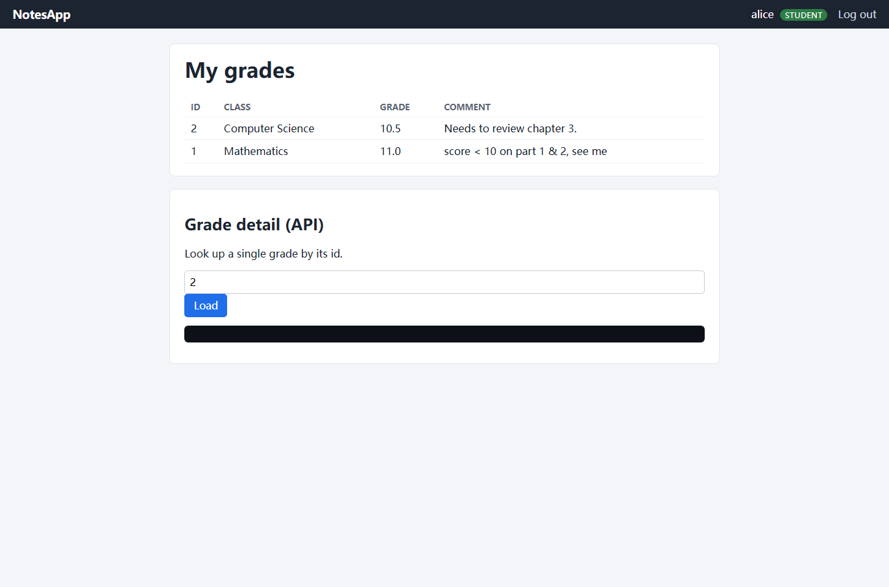
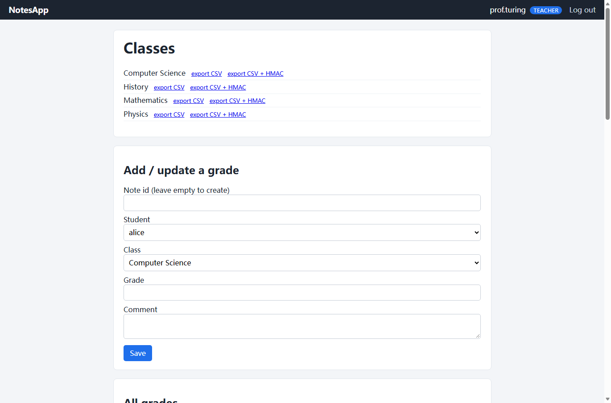

I stored a script in a grade comment, checked what Alice's browser did, and restored output escaping.
1. The stored comment ran
I logged in as prof.turing and saved this harmless test comment on note 1, Alice's note:
<script>alert('XSS by Eve')</script>
Alice then logged in normally and opened her dashboard. The response contained a live script element. In a real Edge browser, the dialog event reported:
Page.javascriptDialogOpening message: XSS by Eve comment cell contained a script element: true

Figure 1. Alice's dashboard was open when the Edge dialog fired. The exact dialog event is recorded in evidence/raw/alice-browser-before.json.
The comment is encrypted in the database, but the app decrypts it before rendering. Encryption at rest did not prevent the browser from receiving code.
Stored XSS · local isolated NotesApp lab · harmless alert payload only
2. I restored autoescaping in both templates
The unsafe wrapper was in dashboard.html and teacher.html. I removed the wrapper and kept the comment variable:
<td>{{ n.comment }}</td>
After rebuilding, I saved the exact same script comment again. Alice's dashboard showed the characters as text. Edge reported no dialog, and there was no script element in the cell. I checked the teacher page too.

Figure 2. Alice's dashboard after the fix.Figure 3. Teacher view after the fix.
Browser result after the fix:
alertObserved = false
commentHTML = <script>alert('XSS by Eve')</script>
scriptElementPresent = false
The actual DOM text remains <script>alert('XSS by Eve')</script>; only the HTML representation is escaped.
The patch changes only the two comment cells and leaves Jinja's default escaping enabled.
3. Normal comments still display correctly
I saved this ordinary comment:
score < 10 on part 1 & 2, see me
Both pages displayed the same readable text. The HTML source used < and &, and the browser created no script element.

Figure 4. Normal comment on Alice's dashboard.

Figure 5. Normal comment in the teacher view.
Check
Observed result
Script before fix
Edge alert: “XSS by Eve”; live script element present
Same script after fix
Displayed as text; no alert; no script element
Normal text with < and &
Readable in dashboard and teacher view
Conclusion: letting Jinja escape output by default stopped the stored script in both views while preserving ordinary comments.
Both requested templates are committed locally as f0b04cd. The commit has not yet been pushed to GitHub.
Prediction and full requirement-by-requirement test notes are included in this hand-in folder.